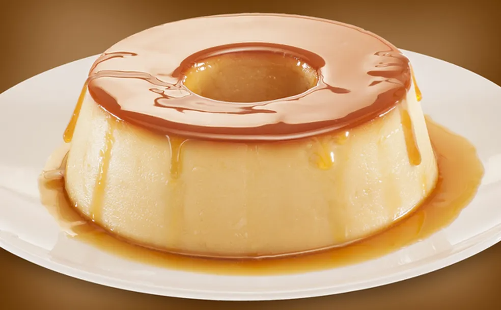

Receita de um pudim simples
Uma das sobremesas mais tradicionais, o clássico pudim de leite é mais fácil de preparar do que muitos
pensam. Confira a receita!
Tempo de preparo
-
Total: Aproximadamente 50 minutos
-
Preparo:10 minutos
-
Cozimento:40 minutos
Ingredientes
- 1 lata de leite condensado
- 3 ovos inteiros
- 1 lata de leite (medida da lata de leite condensado)
Modo de preparo
-
Primeiro: bata bem os ovos no liquidificador
-
Acrescente: o leite condensado e o leite, e bata novamente.
-
Coloque: forma redonda e despeje a massa do pudim por cima.
-
Logo após:Asse em forno médio por 45 minutos, com a assadeira redonda dentro de uma
maior com água.
-
Espete um garfo para ver se está bem assado.
-
Por final:Deixe esfriar e desenforme.